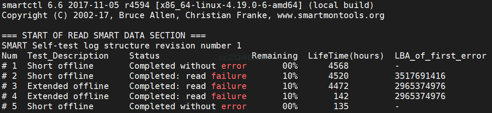

前言
家里NAS突然死机了，死机原因有没有找到，但是用SMART检查因硬盘的时候一块盘read failure了，在网上找了半天解决方法， 大多都是说扫描出坏块然后把坏块跳过，只有一篇老外N年前写的文章说是可以用dd重写坏块抢救下。 最后自然是修复了，但是用的是badblocks修复的，本次记录一下。怪自己太懒，没做邮件通知和硬盘自检，拖延症晚期。

之前没截图，这个是最后已经恢复的图片，可以看到中间几个检测到10%就过不去了。
硬盘坏道
硬盘坏道就是机械硬盘在使用过程中产生的各种各样问题中最严重的一种，硬盘坏道出现，基本就代表硬盘寿命的终结，只能想办法拖延报废时间，无法解决坏道的问题。硬盘坏道主要是因为硬盘本身的质量以及老化，其次就是平时在使用上没有好好爱护，比如内存太少以致应用软件对硬盘频繁访问、对硬盘过分频繁地整理碎片、不适当的超频、电源质量不好、温度过高、防尘不良、震动等，诸类问题都可能引起硬盘坏道。
主要原因
1、非法关机
硬盘在工作时是不能突然断电和非法关机的，这点大家要切记，这也是使硬盘最容易产生坏道的重要原因之一。原因很简单：当硬盘在工作中是，盘片处于高速运转状态，磁头停留在盘片的不同位置读取磁盘中存放的数据。如果中途突然断电，磁头便会迅速做归位动作，则可能导致磁头与盘片猛烈磨擦而损坏硬盘盘片。因此在工作中，千万要避免突然断电导致非法关机，另外其它的非法关机操作也要尽量的避免。再者windwos自带重新启动功能也尽量少用，因为这一功能会使硬盘在瞬间突然断电加电，也极容易引起硬盘的各种故障，如果需要重新启动，则正确的方法是在电脑关闭10秒钟以后再按开机按钮打开电脑。
2、静电
静电对电脑硬盘的损害大家也许再熟悉不过了，对于硬盘而言，其背部的电路版同样会受到静电的伤害。因些，不能用手随便地触摸硬盘背面的电路板。这是因为在气候干燥时，人体通常带有静电，在这种情况下用手触摸硬盘背面的电路板，则人体静电就可能伤害到硬盘上的电子元器件，导致硬盘无法正常运行。
在用手拿硬盘时应该抓住硬盘两侧，并避免与其背面的电路板直接接触。有些类型的硬盘会在其外部包上一层护膜，它除具备防震功能外，更把电路板保护其中，这样我们就可以不用担心什么静电了。
3、高温
温度对硬盘的寿命也是有很大影响的。硬盘工作时会产生一定热量，使用中存在散热问题。温度以20～25℃为宜，过高或过低都会使晶体振荡器的时钟主频发生改变。温度还会造成硬盘电路元器件失灵，磁介质也会因热胀效应而造成记录错误。温度过低，空气中的水分会被凝结在集成电路元器件上，造成短路。
湿度过高时，电子元器件表面可能会吸附一层水膜，氧化、腐蚀电子线路，以致接触不良，甚至短路，还会使磁介质的磁力发生变化，造成数据的读写错误；湿度过低，容易积累大量的因机器转动而产生的静电荷，从而烧坏CMOS电路，吸附灰尘而损坏磁头、划伤磁盘片。机房内的湿度以45～65%为宜。注意使空气保持干燥或经常给系统加电，靠自身发热将机内水汽蒸发掉。另外，尽量不要使硬盘靠近强磁场，如音箱、喇叭、电机、电台、手机等，以免硬盘所记录的数据因磁化而损坏。
4、震动
硬盘的制造过程十分的复杂，工艺十分精密，虽然各大硬盘厂商都在硬盘中加入了防震抗摔功能，但碰撞和震动依然是困绕硬盘的几大杀手之一。过度的碰撞和长期工作在震动的环境下极易造成硬盘盘片与磁头结合不严密，磁头断裂的现象，特别是在硬盘工作中，后果将会更加的严重。因此，一定要将硬盘紧密的固定的机箱内部，上紧每一颗螺丝。另外工作过程不要直接移动硬盘和移动机箱，需要将电脑移动位置时切记要轻拿轻放，防止硬盘碰撞造成损坏。
5、灰尘
灰尘对硬盘的损害是非常大的，可以说灰尘是硬盘的头号杀手。大家知道硬盘的磁头与盘片接触是十分紧密的，不允许有半点的灰尘，如果灰尘落入硬盘盘片上后，那么就意识着硬盘离损坏为期不晚。
另外，如果在灰尘严重的环境下长期工作，硬盘很容易吸引空气中的灰尘颗粒，使其长期积累在硬盘的内部电路元器件上，会影响电子元器件的热量散发，使得电路元器件的温度上升，产生漏电或烧坏元件。灰尘也可能吸收水分，腐蚀硬盘内部的电子线路，造成一些莫名其妙的问题，所以灰尘体积虽小，但对硬盘的危害是绝对不可低估。因此必须保持环境卫生，减少空气中的潮湿度和含尘量。
坏道类型
硬盘的坏道分两种类型：逻辑坏道和物理坏道。
物理坏道：顾名思义就是硬盘实体有损坏的地方，只要有1个坏道，很快硬盘就会产生更多坏道而报废，隔离坏道也只能拖延硬盘报废的时间，即使拖延也可能拖不久，和硬盘中的重要数据相比，还是赶紧换了的好。
逻辑坏道：是磁盘磁道上面的校验信息（ECC）跟磁道的数据对不上号所致。出现这一故障的原因，通常都是因为一些程序的错误操作或是该处扇区的磁介质开始出现不稳定的先兆。物理坏道也是逻辑坏道产生的一种原因，一般可用软件修复。
解决过程
检索坏道
使用badblocks命令检查硬盘坏道：
1 | badblocks -s -v -o /root/sdd.log /dev/sdd |
以上是检查整块sdd硬盘，并将坏块结果输出到/root/sdd.log中。
1 | cat /root/sdd.log |
备份数据
有重要数据就备份，也可以不备份
1 | dd if=/dev/sdd skip=3630171136 of=/tmp/3630171136-3630171139.dat count=4 |
if：需要备份的硬盘
skip：对原文件（if后的部分）跳过多少块再开始备份
of：文件备份目标
count：备份多少块
卸载硬盘
在使用的硬盘是无法修复的，必须要先umont硬盘后才能开始修复
1 | umount /dev/sdd |
如果提示”Device busy”是因为有程序在使用这个分区，需要将这些进程都关闭。需要使用命令查看哪些进程使用了该目录。
1 | fuser -m /home |
第一条fuser命令列出使用/home的进程ID，第二条列出PID并kill掉进程（带有提示确认），建议先使用第一条命令列出PID，然后针对查看是哪些类型的进程，不要盲目杀死进程。
修复硬盘
umount 分区成功后，修复命令如下，其中-s表示给出进度，-w表示写入修复的，后面是结束（END）和开始（START）块号，注意END在前，START在后。
1 | badblocks -s -w /dev/sdd 3630171139 3630171136 |
修复完成后重新检查坏块区
1 | badblocks -s -v /dev/sdd 3630171139 3630171136 |
恢复数据
之前做数据备份的现在可以恢复数据了
1 | dd if=/tmp/217874591-217874595.dat of=/dev/sdd |
最后将硬盘mount 回去
1 | mount /dev/sdd /home |